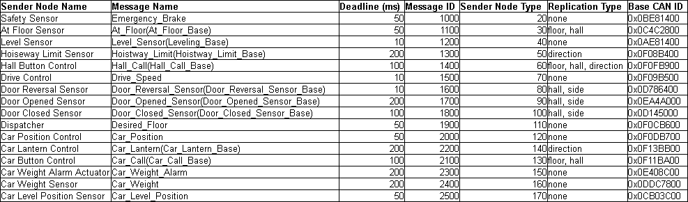
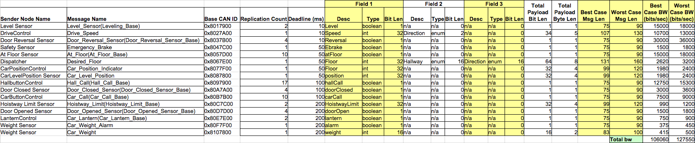

18649 - Network Schedule
18649 <semester FALL 2014 >
Group 11 - Eric Newhall enewhall, Jonathan Leung kjleung1, Mengzhe Li mzli, Ting Xu tingx
CAN Message Dictionary
Messages that are generated and used by the elevator. Messages with the same
sender node will have the same sender node type and message ID. Deadline determines
how frequently the message must be sent. The replication determines how many times
the same message is sent for different objects.

Network Schedule Analaysis
The best case message lengths can be determined by 67+8*(size of payload in bytes)
The worst case message lengths can be determined by 67+8*(size of payload in bytes) + Floor[(54+8*(size of payload in bytes)) / 4]
Then the number of bytes sent per minute can be calculated from the deadlines and the best/worst case message lengths.

network-schedule.xls
Simulation Analysis
We suspected a bandwidth between 106060 and 127550. During simulation with -b 200 enabled, we successfully ran with 55% usage. This calculates to 110640, which lies within our suspected regions. Thus, our calculations are correct.